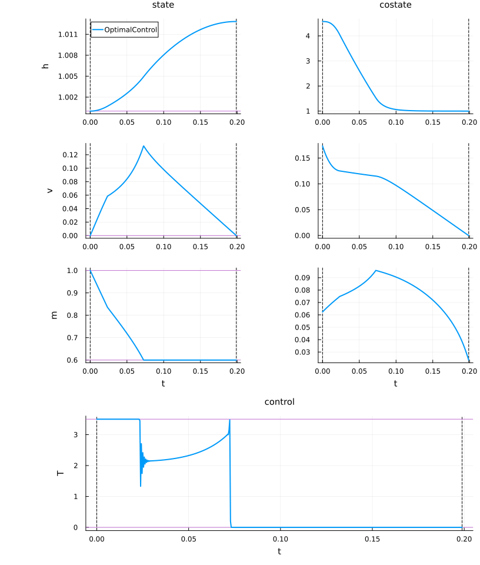
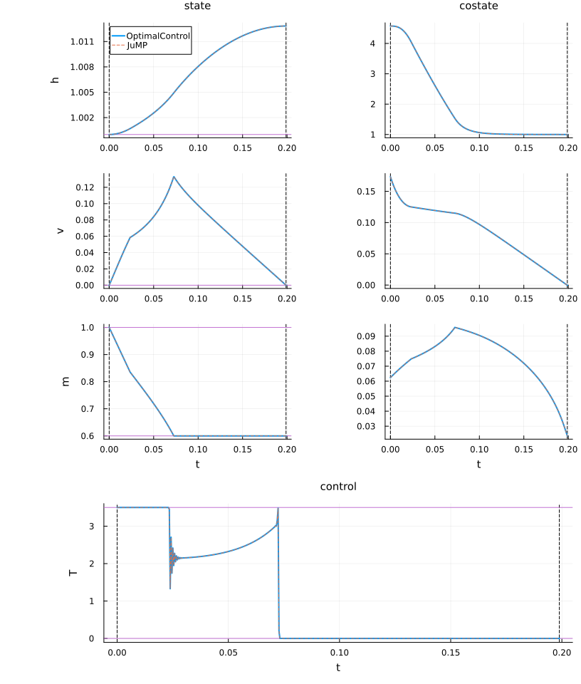
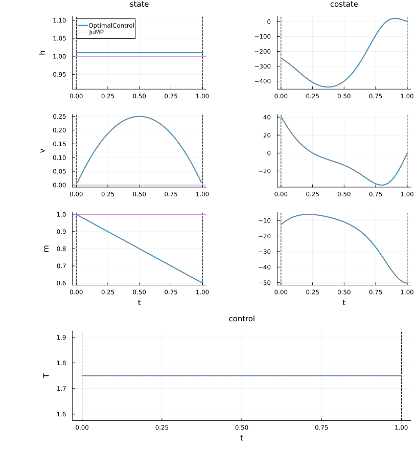

Rocket
This problem models the maximisation of the final altitude of a vertically launched rocket, a classical example in optimal control theory with singular arcs (see Bryson [7, pp. 392–394]). The rocket dynamics involve thrust, drag, gravity, and fuel consumption.
System Description
The state variables are:
\[x = (h, v, m)\]
\[h\]
: altitude\[v\]
: vertical velocity\[m\]
: mass
The control variable is:
\[u = T\]
\[T\]
: rocket thrust
Dynamics
The equations of motion are:
\[\dot{h} = v\]
\[\dot{v} = \frac{T - D(h, v) - m g(h)}{m}\]
\[\dot{m} = -\frac{T}{c}\]
where
- Drag:
\[D(h, v) = D_c \, v^2 \exp\!\left(-h_c \, \frac{h - h_0}{h_0}\right)\]
- Gravity:
\[g(h) = g_0 \left(\frac{h_0}{h}\right)^2\]
- Fuel constant:
\[c = \tfrac{1}{2}\sqrt{g_0 h_0}\]
Constraints
- Control constraints:
\[0 \leq T(t) \leq T_{\max}\]
with
\[T_{\max} = T_c \, m_0 g_0\]
- State constraints:
\[h(t) \geq h_0\]
\[v(t) \geq v_0\]
\[m_f \leq m(t) \leq m_0\]
- Initial conditions:
\[h(0) = h_0, \quad v(0) = v_0, \quad m(0) = m_0\]
- Final condition:
\[m(T) = m_f = m_c m_0\]
Objective
The objective is to maximise the final altitude $h(T)$:
\[J = -h(T) \to \min\]
Parameters
For the standard nondimensionalised version of the problem:
\[h_0 = 1, \quad v_0 = 0, \quad m_0 = 1, \quad g_0 = 1\]
\[T_{\max} = 3.5 g_0 m_0, \quad D_c = \tfrac{1}{2} v_c \tfrac{m_0}{g_0}, \quad c = \tfrac{1}{2}\sqrt{g_0 h_0}\]
with
\[h_c = 500, \quad v_c = 620, \quad m_c = 0.6\]
References
- Bryson, A. E. (1999). Dynamic Optimization. Addison Wesley Longman. (pp. 392–394)
- More, J., Garbow, B., Hillstrom, K., & Watson, L. (2001). COPS: Constrained Optimization Problem Set (COPS3). Argonne National Laboratory. Retrieved from https://www.mcs.anl.gov/~more/cops/cops3.pdf
Packages
Import all necessary packages and define DataFrames to store information about the problem and resolution results.
using OptimalControlProblems # to access the Beam model
using OptimalControl # to import the OptimalControl model
using NLPModelsIpopt # to solve the model with Ipopt
import DataFrames: DataFrame # to store data
using NLPModels # to retrieve data from the NLP solution
using Plots # to plot the trajectories
using Plots.PlotMeasures # for leftmargin, bottommargin
using JuMP # to import the JuMP model
using Ipopt # to solve the JuMP model with Ipopt
data_pb = DataFrame( # to store data about the problem
Problem=Symbol[],
Grid_Size=Int[],
Variables=Int[],
Constraints=Int[],
)
data_re = DataFrame( # to store data about the resolutions
Model=Symbol[],
Flag=Any[],
Iterations=Int[],
Objective=Float64[],
)OptimalControl model
Solve the problem
Import the OptimalControl problem and solve it to obtain the solution.
# import model
docp = rocket(OptimalControlBackend())
nlp_oc = nlp_model(docp)
# solve
nlp_sol = NLPModelsIpopt.ipopt(
nlp_oc;
print_level=4,
tol=1e-8,
mu_strategy="adaptive",
sb="yes",
)
# build an optimal control solution
ocp_sol = build_ocp_solution(docp, nlp_sol)Total number of variables............................: 2005
variables with only lower bounds: 1003
variables with lower and upper bounds: 1002
variables with only upper bounds: 0
Total number of equality constraints.................: 1504
Total number of inequality constraints...............: 0
inequality constraints with only lower bounds: 0
inequality constraints with lower and upper bounds: 0
inequality constraints with only upper bounds: 0
Number of Iterations....: 21
(scaled) (unscaled)
Objective...............: -1.0128367166830150e+00 -1.0128367166830150e+00
Dual infeasibility......: 1.3598083351625065e-09 1.3598083351625065e-09
Constraint violation....: 1.5371387496188049e-09 1.5371387496188049e-09
Variable bound violation: 2.5990741747988341e-36 2.5990741747988341e-36
Complementarity.........: 1.9466553628786356e-11 1.9466553628786356e-11
Overall NLP error.......: 1.5371387496188049e-09 1.5371387496188049e-09
Number of objective function evaluations = 22
Number of objective gradient evaluations = 22
Number of equality constraint evaluations = 22
Number of inequality constraint evaluations = 0
Number of equality constraint Jacobian evaluations = 22
Number of inequality constraint Jacobian evaluations = 0
Number of Lagrangian Hessian evaluations = 21
Total seconds in IPOPT = 2.062
EXIT: Optimal Solution Found.Compute state, control, objective, and iteration data for comparison:
t_oc = time_grid(ocp_sol)
x_oc = state(ocp_sol).(t_oc)
u_oc = control(ocp_sol).(t_oc)
o_oc = objective(ocp_sol)
v_oc = variable(ocp_sol)
i_oc = nlp_sol.iterStore and print the data
Store the following data about the problem:
push!(data_pb,
(
Problem=:rocket,
Grid_Size=metadata[:rocket][:N],
Variables=get_nvar(nlp_oc),
Constraints=get_ncon(nlp_oc),
)
)| Row | Problem | Grid_Size | Variables | Constraints |
|---|---|---|---|---|
| Symbol | Int64 | Int64 | Int64 | |
| 1 | rocket | 500 | 2005 | 1504 |
And store the following data about the resolution:
push!(data_re,
(
Model=:OptimalControl,
Flag=nlp_sol.status,
Iterations=nlp_sol.iter,
Objective=objective(ocp_sol),
)
)| Row | Model | Flag | Iterations | Objective |
|---|---|---|---|---|
| Symbol | Any | Int64 | Float64 | |
| 1 | OptimalControl | first_order | 21 | -1.01284 |
Plot the solution
Visualise states, costates, and controls for the OptimalControl solution:
x_vars = metadata[:rocket][:state_name]
u_vars = metadata[:rocket][:control_name]
n = length(x_vars) # number of states
m = length(u_vars) # number of controls
plt = plot(
ocp_sol;
state_style=(color=1,),
costate_style=(color=1, legend=:none),
control_style=(color=1, legend=:none),
path_style=(color=1, legend=:none),
dual_style=(color=1, legend=:none),
size=(816, 240*(n+m)),
label="OptimalControl",
leftmargin=20mm,
)
for i in 2:n
plot!(plt[i]; legend=:none)
end
JuMP model
Solve the problem
Import the JuMP model and solve it.
# import model
nlp_jp = rocket(JuMPBackend())
# solve
set_optimizer(nlp_jp, Ipopt.Optimizer)
set_optimizer_attribute(nlp_jp, "print_level", 4)
set_optimizer_attribute(nlp_jp, "tol", 1e-8)
set_optimizer_attribute(nlp_jp, "mu_strategy", "adaptive")
set_optimizer_attribute(nlp_jp, "linear_solver", "mumps")
set_optimizer_attribute(nlp_jp, "sb", "yes")
optimize!(nlp_jp)Total number of variables............................: 2005
variables with only lower bounds: 1003
variables with lower and upper bounds: 1002
variables with only upper bounds: 0
Total number of equality constraints.................: 1504
Total number of inequality constraints...............: 0
inequality constraints with only lower bounds: 0
inequality constraints with lower and upper bounds: 0
inequality constraints with only upper bounds: 0
Number of Iterations....: 21
(scaled) (unscaled)
Objective...............: -1.0128367166830152e+00 -1.0128367166830152e+00
Dual infeasibility......: 1.3598086942497593e-09 1.3598086942497593e-09
Constraint violation....: 1.5371387773743805e-09 1.5371387773743805e-09
Variable bound violation: 3.1328491429696232e-37 3.1328491429696232e-37
Complementarity.........: 1.9466553752252478e-11 1.9466553752252478e-11
Overall NLP error.......: 1.5371387773743805e-09 1.5371387773743805e-09
Number of objective function evaluations = 22
Number of objective gradient evaluations = 22
Number of equality constraint evaluations = 22
Number of inequality constraint evaluations = 0
Number of equality constraint Jacobian evaluations = 22
Number of inequality constraint Jacobian evaluations = 0
Number of Lagrangian Hessian evaluations = 21
Total seconds in IPOPT = 0.156
EXIT: Optimal Solution Found.For the numerical comparison, define:
t_jp = time_grid(:rocket, nlp_jp)
x_jp = state(:rocket, nlp_jp).(t_jp)
u_jp = control(:rocket, nlp_jp).(t_jp)
o_jp = objective_value(nlp_jp)
v_jp = variable(:rocket, nlp_jp)
i_jp = barrier_iterations(nlp_jp)Store and print the data
Store the results of the resolution:
push!(data_re,
(
Model=:JuMP,
Flag=termination_status(nlp_jp),
Iterations=barrier_iterations(nlp_jp),
Objective=objective_value(nlp_jp),
)
)| Row | Model | Flag | Iterations | Objective |
|---|---|---|---|---|
| Symbol | Any | Int64 | Float64 | |
| 1 | OptimalControl | first_order | 21 | -1.01284 |
| 2 | JuMP | LOCALLY_SOLVED | 21 | -1.01284 |
Plot the solution
Overlay the JuMP solution on the previous plots:
t = time_grid(:rocket, nlp_jp) # t0, ..., tN = tf
x = state(:rocket, nlp_jp) # function of time
u = control(:rocket, nlp_jp) # function of time
p = costate(:rocket, nlp_jp) # function of time
for i in 1:n # state
label = i == 1 ? "JuMP" : :none
plot!(plt[i], t, t -> x(t)[i]; color=2, linestyle=:dash, label=label)
end
for i in 1:n # costate
plot!(plt[n+i], t, t -> -p(t)[i]; color=2, linestyle=:dash, label=:none)
end
for i in 1:m # control
plot!(plt[2n+i], t, t -> u(t)[i]; color=2, linestyle=:dash, label=:none)
end
Initial guess
The initial guess can also be visualised by running the solver with max_iter=0.
Unfold to see the code for plotting the initial guess.
function plot_initial_guess()
# import OptimalControl model
docp = rocket(OptimalControlBackend())
nlp_oc = nlp_model(docp)
# solve
nlp_sol = NLPModelsIpopt.ipopt(
nlp_oc;
max_iter=0,
print_level=5,
tol=1e-8,
mu_strategy="adaptive",
sb="yes",
)
# build an optimal control solution
ocp_sol = build_ocp_solution(docp, nlp_sol)
# plot the OptimalControl solution
plt = plot(
ocp_sol;
state_style=(color=1,),
costate_style=(color=1, legend=:none),
control_style=(color=1, legend=:none),
path_style=(color=1, legend=:none),
dual_style=(color=1, legend=:none),
size=(816, 220*(n+m)),
label="OptimalControl",
leftmargin=20mm,
)
for i in 2:n
plot!(plt[i]; legend=:none)
end
# import JuMP model
nlp_jp = rocket(JuMPBackend())
# solve
set_optimizer(nlp_jp, Ipopt.Optimizer)
set_optimizer_attribute(nlp_jp, "max_iter", 0)
set_optimizer_attribute(nlp_jp, "print_level", 5)
set_optimizer_attribute(nlp_jp, "tol", 1e-8)
set_optimizer_attribute(nlp_jp, "mu_strategy", "adaptive")
set_optimizer_attribute(nlp_jp, "linear_solver", "mumps")
set_optimizer_attribute(nlp_jp, "sb", "yes")
optimize!(nlp_jp)
# plot
t = time_grid(:rocket, nlp_jp) # t0, ..., tN = tf
x = state(:rocket, nlp_jp) # function of time
u = control(:rocket, nlp_jp) # function of time
p = costate(:rocket, nlp_jp) # function of time
for i in 1:n # state
label = i == 1 ? "JuMP" : :none
plot!(plt[i], t, t -> x(t)[i]; color=2, linestyle=:dash, label=label)
end
for i in 1:n # costate
plot!(plt[n+i], t, t -> -p(t)[i]; color=2, linestyle=:dash, label=:none)
end
for i in 1:m # control
plot!(plt[2n+i], t, t -> u(t)[i]; color=2, linestyle=:dash, label=:none)
end
return plt
endplot_initial_guess()
Numerical comparison
Compare OptimalControl and JuMP solutions in terms of iterations, $L^2$ norms, and objective values.
Unfold to get the code of the numerical comparison.
v_vars = metadata[:rocket][:variable_name]
function L2_norm(T, X)
# T and X are supposed to be one dimensional
s = 0.0
for i in 1:(length(T) - 1)
s += 0.5 * (X[i]^2 + X[i + 1]^2) * (T[i + 1]-T[i])
end
return √(s)
end
function numerical_comparison()
println("┌─ ", "rocket")
println("│")
# number of iterations
println("├─ Number of iterations")
println("│")
println("│ OptimalControl : ", i_oc)
println("│ JuMP : ", i_jp)
println("│")
# state
for i in eachindex(x_vars)
xi_oc = [x_oc[k][i] for k in eachindex(t_oc)]
xi_jp = [x_jp[k][i] for k in eachindex(t_jp)]
L2_oc = L2_norm(t_oc, xi_oc)
L2_jp = L2_norm(t_oc, xi_jp)
L2_ae = L2_norm(t_oc, xi_oc-xi_jp)
L2_re = L2_ae/(0.5*(L2_oc + L2_jp))
println("├─ State $(x_vars[i]) (L2 norm)")
println("│")
println("│ OptimalControl : ", L2_oc)
println("│ JuMP : ", L2_jp)
println("│ Absolute error : ", L2_ae)
println("│ Relative error : ", L2_re)
println("│")
end
# control
for i in eachindex(u_vars)
ui_oc = [u_oc[k][i] for k in eachindex(t_oc)]
ui_jp = [u_jp[k][i] for k in eachindex(t_jp)]
L2_oc = L2_norm(t_oc, ui_oc)
L2_jp = L2_norm(t_oc, ui_jp)
L2_ae = L2_norm(t_oc, ui_oc-ui_jp)
L2_re = L2_ae/(0.5*(L2_oc + L2_jp))
println("├─ Control $(u_vars[i]) (L2 norm)")
println("│")
println("│ OptimalControl : ", L2_oc)
println("│ JuMP : ", L2_jp)
println("│ Absolute error : ", L2_ae)
println("│ Relative error : ", L2_re)
println("│")
end
# control
if !isnothing(v_vars)
for i in eachindex(v_vars)
vi_oc = v_oc[i]
vi_jp = v_jp[i]
vi_ae = abs(vi_oc-vi_jp)
vi_re = vi_ae/(0.5*(abs(vi_oc) + abs(vi_jp)))
println("├─ Variable $(v_vars[i])")
println("│")
println("│ OptimalControl : ", vi_oc)
println("│ JuMP : ", vi_jp)
println("│ Absolute error : ", vi_ae)
println("│ Relative error : ", vi_re)
println("│")
end
end
# objective
o_ae = abs(o_oc-o_jp)
o_re = o_ae/(0.5*(abs(o_oc) + abs(o_jp)))
println("├─ objective")
println("│")
println("│ OptimalControl : ", o_oc)
println("│ JuMP : ", o_jp)
println("│ Absolute error : ", o_ae)
println("│ Relative error : ", o_re)
println("│")
println("└─")
return nothing
endnumerical_comparison()┌─ rocket
│
├─ Number of iterations
│
│ OptimalControl : 21
│ JuMP : 21
│
├─ State h (L2 norm)
│
│ OptimalControl : 0.4491155170440341
│ JuMP : 0.44911551704403424
│ Absolute error : 2.260716660539069e-16
│ Relative error : 5.03370864453435e-16
│
├─ State v (L2 norm)
│
│ OptimalControl : 0.032887459968316206
│ JuMP : 0.032887459968317254
│ Absolute error : 6.027476707459623e-15
│ Relative error : 1.8327583563055346e-13
│
├─ State m (L2 norm)
│
│ OptimalControl : 0.3021737337505838
│ JuMP : 0.3021737337505792
│ Absolute error : 9.236903295566055e-15
│ Relative error : 3.056818731700329e-14
│
├─ Control T (L2 norm)
│
│ OptimalControl : 0.7578843500093935
│ JuMP : 0.7578843500093733
│ Absolute error : 9.187957384981266e-12
│ Relative error : 1.2123165473554785e-11
│
├─ Variable tf
│
│ OptimalControl : 0.19884931255027233
│ JuMP : 0.1988493125502756
│ Absolute error : 3.2751579226442118e-15
│ Relative error : 1.6470551900028178e-14
│
├─ objective
│
│ OptimalControl : -1.012836716683015
│ JuMP : -1.0128367166830152
│ Absolute error : 2.220446049250313e-16
│ Relative error : 2.1923040631091578e-16
│
└─